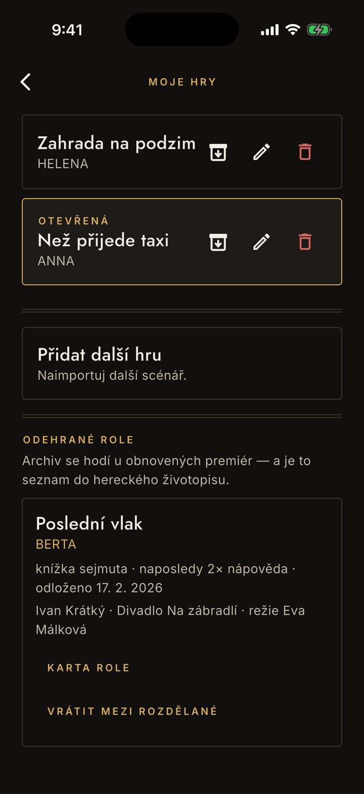
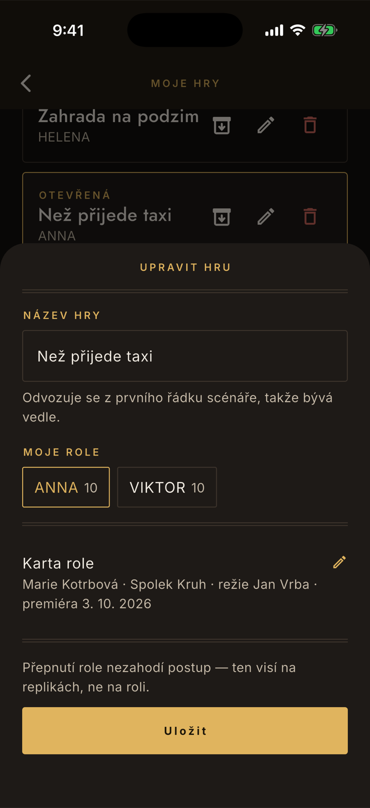
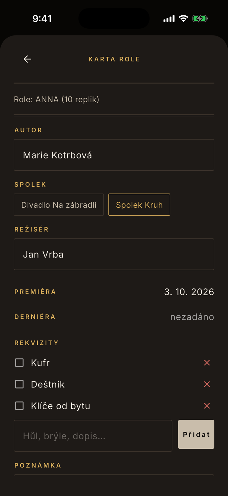

Data
Knihovna, archiv a karta role
Herec málokdy zkouší jen jednu věc. A když je po derniéře, role nezmizí — zůstane v životopisu a při obnovené premiéře se vrací. Knihovna je na obojí: rozdělané role vedle sebe a odehrané odložené stranou, se vším, co jste u nich nasbírali.
Moje hry
Přepínáš ťuknutím, otevřená je orámovaná
Knihovna se otevírá ikonou vpravo nahoře na domovské obrazovce, hned vedle ozubeného kola. Nahoře jsou rozdělané role, dole odehrané. Otevřená hra je jen jedna a pozná se podle rámu a slova Otevřená.
Ťuknutí na dlaždici přepne
Dril, čtečka i postup se přepnou s ní. Nic se nezahazuje — druhá hra na tebe čeká přesně tam, kde jsi ji nechal.
Tři ikony u každé hry
Odehráno — do archivu odloží roli mezi odehrané, Upravit otevře název a roli, Smazat hru odstraní. Odložení i smazání se ptají podruhé.
Přidat další hru vede rovnou do importu
Je to tentýž postup jako u první hry — soubor, sdílení, nebo vložení textu. Popisuje ho návod o importu.

Upravit hru
Název a role se dají změnit kdykoli
Název hry si appka odvodila z prvního použitelného řádku scénáře, takže bývá vedle — v tiráži stojí i autor, překladatel a agentura. Opravit ho jde bez nového importu, protože je to údaj o inscenaci, ne o textu.
Přepsat název
Text scénáře zůstane nedotčený, mění se jen jmenovka.
Přehodit roli beze ztráty
U každé postavy je počet replik. Přepnutí role nezahodí postup — ten visí na replikách, ne na roli. Hodí se, když jste zkoušeli alternaci nebo se role přeobsadila.
Odsud se otevírá karta role
Je pod dvojitou linkou i se souhrnem toho, co už je vyplněné. Zpátky se z ní vrací šipkou o úroveň níž, ne ven.

Karta role
Zápis o roli, který jinak zůstane jen v hlavě
Vyplňuje se nejlíp za čerstva, během zkoušení — ne až při archivaci, kdy se vzpomíná, kdo to vlastně režíroval. Horní řádky doplní appka sama z toho, co naměřila.
Co appka doplní
Role a počet replik, datum sejmutí knížky a den odložení do archivu. Jsou to naměřené okamžiky, ne odznaky — sejmutí knížky se nedá prohlásit, jen dosáhnout.
Co vyplníš ty
Autor, spolek, režisér, premiéra a derniéra, poznámka. Spolek se vybírá z čipů, aby se název nepsal u každé role znovu; seznam se udržuje v Nastavení pod Moje spolky.
Rekvizity jsou na šatnu
Napiš je do pole a ťukni na Přidat. Před představením si je odškrtáš ťuknutím, křížek položku smaže. Nakonec Uložit.

Co je zdarma a co ne
Zdarma je jedna hra — a počítá se i ta v archivu
Bezplatná verze má jednu inscenaci celkem, ne jednu rozdělanou. Odložení do archivu tedy místo neuvolní: kdyby ano, „odlož a naimportuj další zdarma" by z placené knihovny udělalo fikci. Ta jedna hra je za to celá a bez omezení — žádné useknuté dějství, žádný limit řádků.
Smazání místo uvolní. Kdo svou práci zahodí, začíná znovu; trvalý příznak by trestal i omyl.
Archivovat můžete i bez plné verze
Ano, a je to schválně. Jinak byste se dohrané role zbavili jen smazáním a přišli o postup i poznámky. Odložení nic nemaže: „Text, poznámky i postup zůstanou a dá se kdykoli vrátit."
Návrat z archivu je zdarma jako výměna — tedy když vedle něj žádná rozdělaná hra není. Odložit jednu a vrátit druhou jde pořád; dvě aktivní naráz už jsou knihovna, a ta je placená.
Karta role: čtení zdarma, psaní v plné verzi
Souhrn vyplněné karty vidíte na dlaždici v archivu vždycky, i bez plné verze, a projde i do zálohy. Placená je editace karty a správa seznamu spolků. Vaše data se nezamykají — platí se za práci s nimi, ne za přístup k nim.
Odškrtnuté rekvizity se neukládají
Je to záměr, ne chyba. Checklist se prochází před každým představením znovu a fajfka ze včerejška by lhala — tvářila by se, že hůl je v šatně, i když jste ji nechali doma. Seznam položek uložený je, jen jejich odškrtnutí ne.
K čemu je archiv, když roli už nehraju
Ke dvěma věcem. Obnovené premiéry se vracejí i po letech a text s poznámkami je v tu chvíli k nezaplacení. A druhá: seznam rolí s autorem, souborem, režisérem a datem premiéry je přesně to, co potřebujete do hereckého životopisu — a co si jinak nikdo nikam nepíše.
Proč knihovna vypadá takhle
Protože zkoušet dvě věci naráz je běžné, ale učit se je současně ne. Otevřená je proto vždycky jedna hra a všechno ostatní v aplikaci se týká jí — dril, čtečka, procenta i termíny. Přepnutí je jedno ťuknutí a nic při něm nepřepočítává, takže se dá dělat i mezi dvěma zkouškami v jednom dni.
Derniéra není konec záznamu
Odložení do archivu je obřad, ne úklid. Aplikace v tu chvíli nedává odznak ani gratulaci; ukáže, co se naměřilo — kdy jste sňali knížku a kolik nápověd padlo naposledy. To jsou skutečné veličiny z vaší práce, a jediné, co má cenu si o roli pamatovat.
Nesedí vám něco kolem her nebo archivu?
contact@lukashula.cz